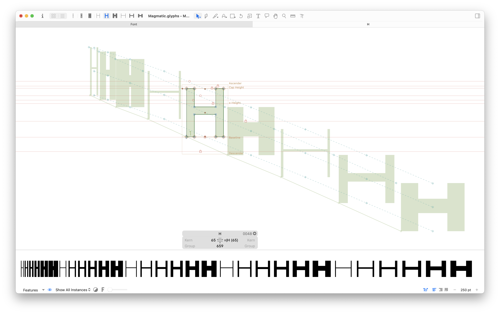
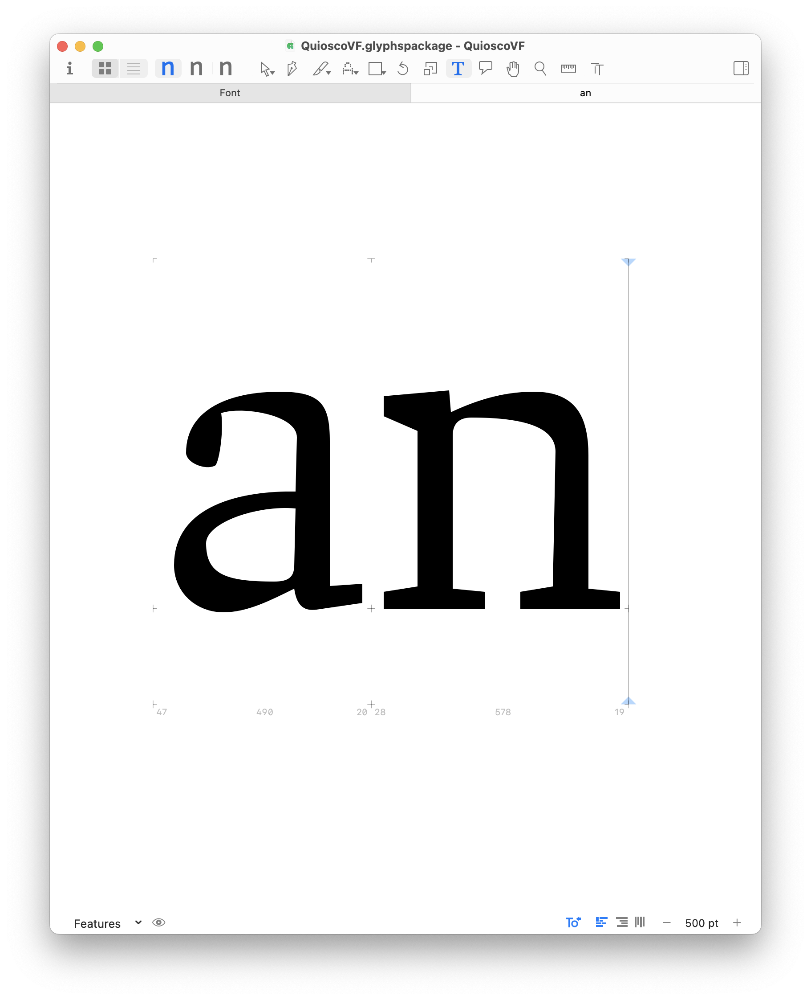
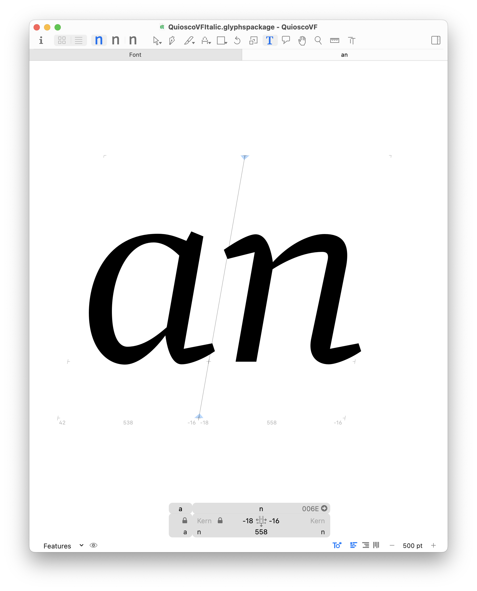
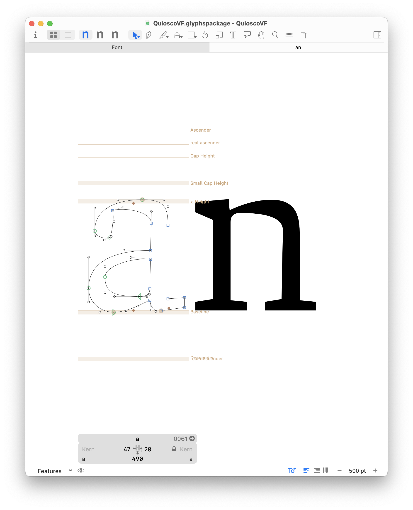
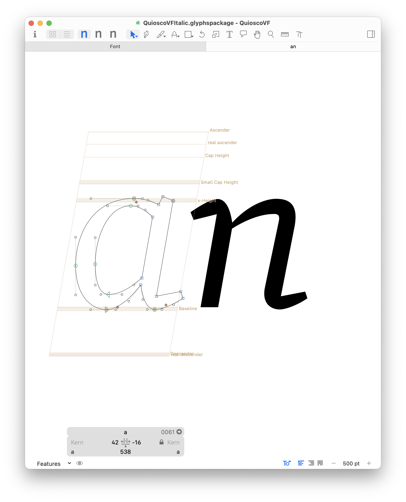

Fonts in real time
Variable fonts as expressive interfaces
What are fonts?
Part 1: Vectors and point structures
A
B
Animated Bezier Vectors, Wikimedia Commons
Digital letterforms are made of mathematical
equations, as functions of time

Master Compatibility view of outlines
H
H
H
→
H
←
H
H
H
Laurence Penney’s Samsa, Variable Font Inspector
s
Axis Tag
Description
Valid Range
wght
weight
1—1000
wdth
width
>0, percent of normal width
opsz
optical sizing
>0, point sizes
ital
italicization
0—1
slnt
slant
-90—90
Standard Axes for Open Type 1.8
Chee Variable by Ohno Type, James Edmonson
Axis Tag
Description
Valid Range
wght
weight
1—1000
wdth
width
>0, percent of normal width
opsz
optical sizing
>0, point sizes
ital
italicization
0—1
slnt
slant
-90—90
Standard Axes for Open Type 1.8
Adrian Frutiger’s Univers Type Family, 1957
fantastic
Quisco
fantastic
Quisco italic




$
Variable Font Substitution Tool,
vfbounds.occupantfonts.com
with Nic Schumann, 2020